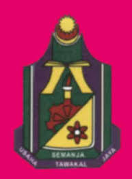

My Biodata
Name: Mohammad Ilman Bin Musri
Age: 22 Years Old
Status: 3rd Year Student
Course: Technology Multimedia
Interests: Programming, Gaming, Photography
Study Journey:
1. SK Sagindai 
2. SMK Matupang Jaya 
3. Labuan Matriculation College
4. Universiti Malaysia Sabah